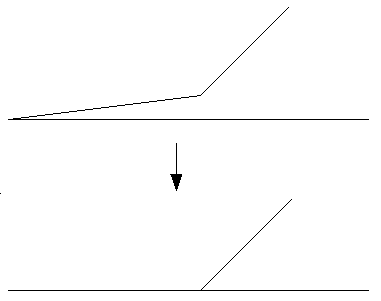

|  |
| tool=rmsa |
+-------------+ +-------------+ +-------------+
| P| P: polygon | P| | P|
| +---+ | I: island | +---+ | | +---+ |
| | I | | B: bridge | | I | | | | I | |
| | | | L: line | | | | | | | |
| +-+-+ | | +---+ | | +-.-+ |
| | | | | | . |
| | B | | | | . L |
| | | | | | . |
+------+------+ +-------------+ +-------------+
v.clean input=testmap output=cleanmap tool=snap thresh=1
v.clean input=areamap output=areamap_clean tool=rmdupl,bpol
v.clean input=lines1 output=lines2 err=points tool=break
v.in.ascii -n out=crossed_lines format=standard << EOF
L 2
0 5
10 5
L 2
5 0
5 10
EOF
v.clean in=crossed_lines out=crossed_lines_brk \
error=intersection tool=break
Last changed: $Date$